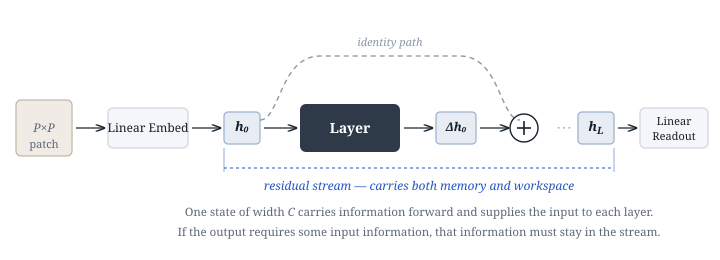
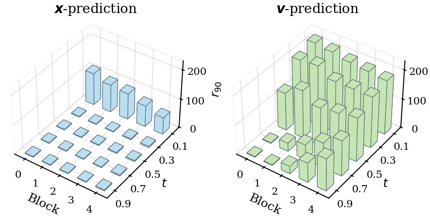
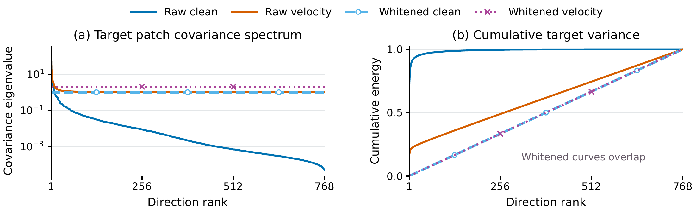
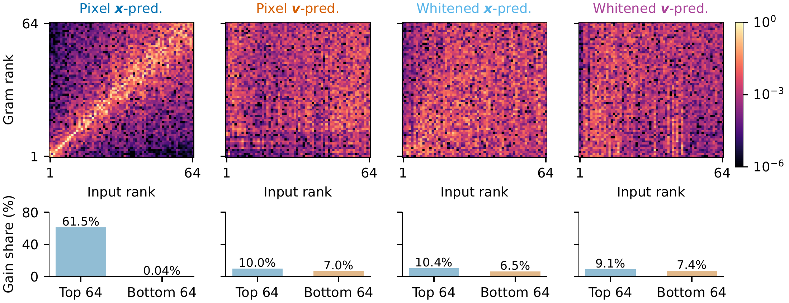
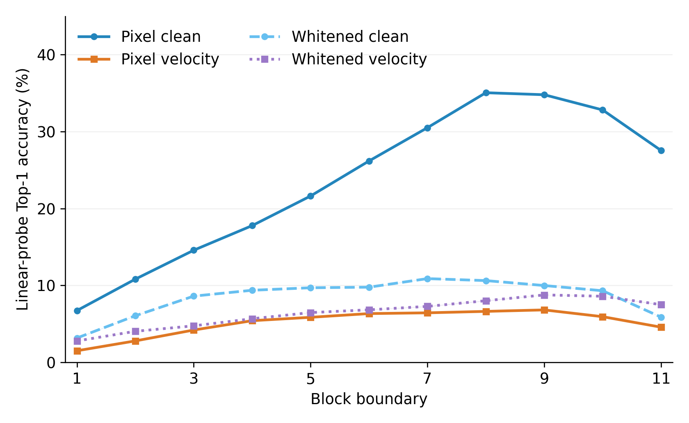
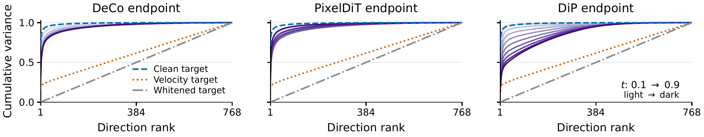
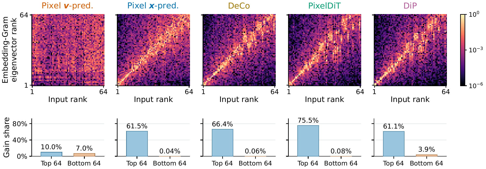
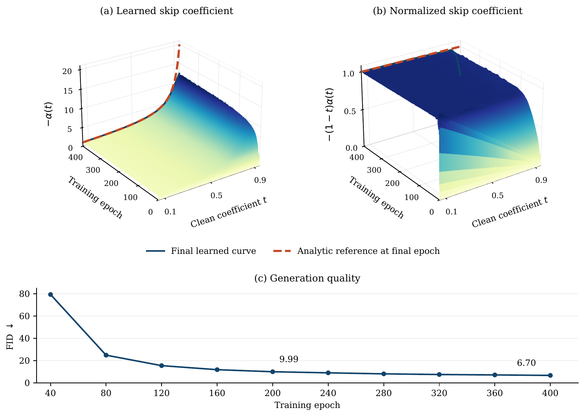

Research note · Diffusion Transformers
Residual-Stream Burden Shapes Representation Learning in Diffusion Transformers
Prediction targets and architecture jointly determine what a Diffusion Transformer must preserve through depth, and this requirement shapes the representations it learns.
Overview
Denoising generative models learn a data distribution by training a neural network to separate clean data from its corrupted version. Specifically, it is standard to ask the network to predict the noise (-prediction) [1], the velocity (-prediction) [2, 3, 4], or the clean data (-prediction) [5] from a noisy input. These parameterizations describe the same generative process and can be converted into one another at inference time, so one might expect them to present comparable learning problems.
However, Li and He [5] found that the choice becomes decisive when plain Diffusion Transformers (DiTs) [6] operate on large image patches. With patches, -prediction succeeds while the other two fail catastrophically. They attribute the advantage of -prediction to the low-dimensional manifold of natural images, arguing that this structure allows clean prediction to use less model capacity while noisy targets force the network to reproduce high-dimensional noise. Nevertheless, this account leaves two key concepts imprecise.
- What kind of low-dimensionality does the network exploit, and how can it be quantified?
- What exactly is the capacity consumed by noisy prediction?
More importantly, the essential question is how the two interact during training. In this blog, we answer these questions and show how the resulting understanding informs architecture design for diffusion models.
The concept of residual-stream burden
To answer these questions, let's go back to the basics and recall how a Transformer [12] processes visual data. There are typically two perspectives.
- Compute within each layer. A visual input, such as an image or a video, is first patchified. Each layer then works on these (hidden) patches in parallel, and so does the final readout.
- Compute across layers. The running representation is updated recursively through depth as via residual connections [11]. The information carried forward by the identity path also supplies the input to subsequent computation.
In summary, the computation in the network is organized as a sequence of these patch-based representations across depth, which we call the residual stream.

Now we revisit the advantage of -prediction from these two perspectives.
Noisy targets require a plain DiT's hidden states to retain noise-dependent input variation through the residual stream for the final readout, so that subsequent layers must compute on noisy representations. As patch size grows, more corruption-dependent pixel variation is packed behind each token, increasing the preservation pressure on its residual state. By contrast, a clean target concentrated in fewer directions reduces the demand on information-carrying capacity for the final readout.
More generally, the output target determines what information must be preserved through depth, and this preservation requirement shapes the representations learned along the residual stream. We call this requirement residual-stream burden. Accordingly, the relevant low-dimensionality should appear in the patch space through which a DiT sees the image, and the relevant capacity should be the bandwidth of the persistent state that carries information across depth.
The contrast between the two targets rests on one identity. In flow matching [3, 4], the noisy input is and the velocity is , so . Under -prediction the network outputs and the velocity is recovered as . The noisy input therefore reaches the output through an analytic long skip, and the residual stream does not have to carry it.
Interactive The schematic summarizes this picture. Blue marks clean image structure, orange marks noise-dependent variation, and gray blocks are DiT blocks. The tabs compare a plain DiT under the two targets, decoupled designs that give the noise its own route, Hyper-Connections that widen the stream, and SiHC, which assigns each stream one subpatch. The particles sketch where information travels and are not measured activations. Use the tabs to switch designs, or open it full size.
A toy example with residual FCNs
Following Li and He [5], the ground-truth data are a planar Swiss roll embedded in by an orthogonal matrix unknown to the model. A five-layer residual ReLU fully connected network (FCN) of width 256 learns this distribution under each target. As reported by Li and He, -prediction recovers the distribution and -prediction fails. The internal states show why (Figure 2). Under -prediction, residual-state variance concentrates in a few directions except at the highest noise level. Under -prediction, more than a hundred directions are needed to explain 90% of the variance by the last block, even when the input is nearly clean, so later layers receive broadly varying states.

The exploitable low-dimensionality is spectral concentration in patch space
A DiT processes a noisy image patch by patch, so the relevant geometry is the geometry of patches. For clean RGB patches from ImageNet , just 8 of the 768 principal directions explain 90% of the variance and already preserve recognizable image structure (Figure 3). The velocity target needs 668 directions to reach the same fraction.


Whitening removes the concentration and the success. To test whether spectral concentration, rather than low intrinsic dimension, is what the network exploits, we whiten every clean patch with an invertible linear transform. Whitening sets every eigenvalue of the clean-patch covariance to one, while mapping the clean-data manifold to a smoothly equivalent manifold of the same intrinsic dimension. Training the same DiT in the whitened space raises the FID of -prediction from 10.19 to 132.95, close to the failure of pixel -prediction.
| Prediction target | Data space | FID ↓ | 90% variance rank |
|---|---|---|---|
| Clean | Pixel | 10.19 | 8 |
| Velocity | Pixel | 139.83 | 668 |
| Clean | Whitened | 132.95 | 692 |
B-size plain DiTs, 200 epochs, ImageNet-, Heun-50. The rank counts target-patch directions needed to explain 90% of the variance.

Why concentration matters for the target. The optimal velocity estimator is . Under -prediction the network must reproduce the term itself, including along the many weak directions where clean images barely vary and changes little. A second-moment calculation makes this explicit. For the best affine predictor from a noisy patch, with clean-patch eigenvalues , unit Gaussian noise and , the predicted variance along direction is
for the clean and velocity targets. As , while . A weak clean direction contributes almost nothing to the clean estimate, yet it still contributes predictable variance to the velocity. On the ImageNet patch spectrum, the affine clean prediction stays concentrated at every noise level, whereas the affine velocity prediction needs hundreds of directions.
| Clean coefficient | 0.1 | 0.3 | 0.5 | 0.7 | 0.75 | 0.9 |
|---|---|---|---|---|---|---|
| Affine clean prediction | 1 | 2 | 3 | 5 | 5 | 7 |
| Affine velocity prediction | 674 | 656 | 638 | 603 | 588 | 488 |
Number of directions explaining 90% of the predicted variance, computed from the ImageNet clean-patch spectrum.
Concentration induces selective filtering. Because the long skip supplies under -prediction, the patch embedding, where the residual stream begins, can suppress the weak directions. We measure the directional gain , which quantifies how strongly the embedding transmits variation along the clean-patch principal direction . Pixel -prediction assigns 61.5% of the total gain to the leading 64 directions and only 0.04% to the trailing 64, compared with 10.0% and 7.0% under -prediction (Figure 5). Neither whitened model shows such selectivity.

The burden constrains representations. For two noisy versions of the same clean image, -prediction must keep their noise-dependent differences distinguishable in the residual stream, whereas -prediction need not. Linear probes on frozen intermediate states [13, 14] show that pixel -prediction develops much stronger class features than pixel -prediction, while both whitened models remain poorly class-readable (Figure 6). Stronger intermediate representations are closely associated with better generation quality [15].

Decoupled designs exploit low-dimensionality in the main stream
Several recent pixel-space architectures, DeCo, PixelDiT and DiP [8, 9, 10], predict velocity yet train well. They supply noisy pixels directly to a decoder conditioned on the main Transformer's features, so local noise-dependent variation reaches the output through a separate path. -prediction can be viewed as the analytic form of the same decoupling [5, 16]. We call the features passed to the decoder the semantic endpoint, since they reflect the burden left on the main backbone. All three B-size models reach FID 6.33 to 13.31 under -prediction, against 139.83 for the plain DiT, and their semantic endpoints are far more concentrated than the velocity target (Figure 7).
Schematic In a decoupled design, a long skip takes the noisy pixels to the decoder, so the embedding of the main stream can filter out the noise.

As in a plain DiT with -prediction, this structure appears at the entrance of the backbone and through its depth. The patch embeddings align with the leading clean-patch directions and suppress the trailing ones (Figure 8), and the intermediate states are much more class-readable than those of plain -prediction.

Training finds such a path even when only a scalar skip is offered. We augment the plain DiT with , initialize and keep the velocity loss. The learned coefficient approaches , the input coefficient of the analytic -prediction conversion, within a few epochs (Figure 9). FID drops from 139.83 to 9.99 at 200 epochs.

These results suggest the target-patch spectrum as a measurable proxy for the size of the burden. By this measure the velocity target places a far larger burden than the clean target (668 against 8 directions). The architecture determines how much of it lands on the main stream. With a separate pixel path, the semantic endpoints of decoupled models need only 35 to 309 directions at . When the burden instead stays on the main stream, as in plain -prediction, the stream itself may need more room.
The relevant capacity is residual-stream bandwidth
We call the width of the persistent state that carries information across depth the residual-stream bandwidth. In a plain Transformer this bandwidth cannot grow on its own, because the residual state also serves as the workspace of every attention and MLP layer, and widening it widens every computation.
Hyper-Connections
Hyper-Connections (HC) [7] separate the persistent state from the workspace. HC replaces with persistent states . Each update reads one width- workspace from them and writes its result back,
so the bandwidth becomes while the workspace stays . mHC [17] keeps the mixing matrix doubly stochastic for stable propagation through depth.
Schematic Hyper-Connections keep several persistent streams, each as wide as the plain one. Each DiT block reads from all of them and writes its update back, so the stream gains room without widening the computation.
The broader target spectrum of -prediction predicts a larger benefit from added bandwidth than for -prediction. We test this with four-stream mHC at nearly unchanged parameters and GFLOPs, in pixel space and in the DINOv2-B [19] feature space used by RAE [18].
| Target | Plain FID ↓ | Four-stream mHC FID ↓ |
|---|---|---|
| Pixel, clean | 10.19 | 9.78 |
| Pixel, velocity | 139.83 | 25.36 |
| DINOv2-B, clean | 5.50 | 3.93 |
| DINOv2-B, velocity | 16.56 | 3.98 |
B-size models, 200 epochs, ImageNet-, Heun-50, CFG 2.9. Each pixel patch or DINOv2-B token has 768 coordinates.
Added bandwidth barely changes pixel -prediction but rescues -prediction from complete failure, and it nearly closes the gap between the two targets in DINOv2-B space. Bandwidth is therefore a key resource for accommodating the burden of noisy prediction.
Spatially Indexed Hyper-Connections
Copied streams add bandwidth but leave the division of the burden among them to training. Spatially Indexed Hyper-Connections (SiHC) make this division explicit. Each persistent state embeds only one subpatch of the computational patch and predicts its local velocity, which reduces its prediction responsibility from 768 to 48 pixel coordinates with subpatches. Identity carry keeps each state's local information available through depth. Static feature-wise read and write maps connect the local states to a shared workspace, which attention and MLP layers use with the original number of tokens. Because the maps are static, reads and writes compose across a stage and allow exact kernel fusion, which lowers peak training memory from 30.18 to 19.82 GiB for the sixteen-stream B model.
Schematic In SiHC each stream embeds and predicts one subpatch, so it carries only the noise of its own region, while every DiT block still reads from all streams.


| Design | State region | Streams | FID ↓ |
|---|---|---|---|
| Plain DiT | 1 | 139.83 | |
| mHC, copied input | 4 | 25.36 | |
| mHC, local input and prediction | 4 | 13.25 | |
| + identity carry, static scalar maps | 4 | 11.50 | |
| + feature-wise maps (SiHC) | 4 | 10.10 | |
| + subpatches | 16 | 8.07 |
B-size models with computational patches and direct -prediction, 200 epochs. Parameters and GFLOPs remain nearly unchanged across the progression.
At the same bandwidth, assigning each stream its own input and prediction region roughly halves FID. With sixteen subpatches, FID reaches 8.07, within the range of decoupled B-size models. The shared workspace also recovers class-readable features. At 50% input noise its linear-probe accuracy is 27.81%, close to 27.54% under -prediction and far above 4.56% under plain -prediction. With REPA [15], SiHC-XL reaches FID 1.71 on ImageNet , competitive with DiP (1.75), DeCo and PixelDiT (both 1.69).
Discussion and future directions
The view behind this work is to treat a neural network not only as a function from noisy input to target, but as a system whose persistent state must serve both prediction and representation learning. Predicting a noisy target requires the residual stream to keep the noise, which creates friction with representation learning. The patch spectrum measures the size of this burden and explains why the problem is most severe for large patches. It also reconciles two lines of progress in pixel-space diffusion. Changing the prediction target and changing the architecture succeed for a common reason, namely that both relieve the main stream of the noise. SiHC explores a complementary direction that accommodates the burden by expanding and organizing residual-stream bandwidth.
Our experiments show that the burden shapes the learned representations, but they do not trace how this shaping unfolds during training. Viewing the burden through its friction with representation learning raises several questions.
How does implicit bias interact with the friction? Selective filtering, concentrated semantic endpoints and the learned long skip all emerge without an explicit objective. We conjecture that when an architecture offers a path that carries the burden outside feature-building computation, gradient descent drifts toward solutions with less friction.
Can the burden benefit representation learning? When the target is a pretrained representation, the burden consists of features that later layers can build on. Clean DINOv2-B features already have a broad spectrum (563 directions for 90% of the variance, against 651 for the velocity target), yet both DINO models retain high class readability through depth, and the noisy DINO input alone supports 80.49% probe accuracy. A broad spectrum measures how much the stream must carry, but not whether carrying it hinders representation learning. This offers a possible reason for the fast convergence of RAE, and it suggests studying diffusability [20, 21, 22] from the perspective of network training.
When do generation and understanding reinforce each other? Janus [23] decouples visual encoding for the two tasks, whereas LatentUM [24] generates within a shared semantic latent space. Characterizing the burden that generation places on shared representations may help explain when the two tasks reinforce each other.
References
[1] Jonathan Ho, Ajay Jain, and Pieter Abbeel. Denoising Diffusion Probabilistic Models. NeurIPS, 2020.
[2] Tim Salimans and Jonathan Ho. Progressive Distillation for Fast Sampling of Diffusion Models. ICLR, 2022.
[3] Yaron Lipman, Ricky T. Q. Chen, Heli Ben-Hamu, Maximilian Nickel, and Matt Le. Flow Matching for Generative Modeling. ICLR, 2023.
[4] Xingchao Liu, Chengyue Gong, and Qiang Liu. Flow Straight and Fast: Learning to Generate and Transfer Data with Rectified Flow. ICLR, 2023.
[5] Tianhong Li and Kaiming He. Back to Basics: Let Denoising Generative Models Denoise. CVPR, 2026.
[6] William Peebles and Saining Xie. Scalable Diffusion Models with Transformers. ICCV, 2023.
[7] Defa Zhu et al. Hyper-Connections. ICLR, 2025.
[8] Zehong Ma, Longhui Wei, Shuai Wang, Shiliang Zhang, and Qi Tian. DeCo: Frequency-Decoupled Pixel Diffusion for End-to-End Image Generation. CVPR, 2026.
[9] Yongsheng Yu, Wei Xiong, Weili Nie, Yichen Sheng, Shiqiu Liu, and Jiebo Luo. PixelDiT: Pixel Diffusion Transformers for Image Generation. CVPR, 2026.
[10] Zhennan Chen et al. DiP: Taming Diffusion Models in Pixel Space. CVPR, 2026.
[11] Kaiming He, Xiangyu Zhang, Shaoqing Ren, and Jian Sun. Deep Residual Learning for Image Recognition. CVPR, 2016.
[12] Ashish Vaswani et al. Attention Is All You Need. NeurIPS, 2017.
[13] Weilai Xiang, Hongyu Yang, Di Huang, and Yunhong Wang. Denoising Diffusion Autoencoders are Unified Self-supervised Learners. ICCV, 2023.
[14] Luming Tang, Menglin Jia, Qianqian Wang, Cheng Perng Phoo, and Bharath Hariharan. Emergent Correspondence from Image Diffusion. NeurIPS, 2023.
[15] Sihyun Yu, Sangkyung Kwak, Huiwon Jang, Jongheon Jeong, Jonathan Huang, Jinwoo Shin, and Saining Xie. Representation Alignment for Generation: Training Diffusion Transformers Is Easier Than You Think. ICLR, 2025.
[16] Hansheng Chen, Jan Ackermann, Minseo Kim, Gordon Wetzstein, and Leonidas Guibas. Asymmetric Flow Models. arXiv:2605.12964, 2026.
[17] Zhenda Xie et al. mHC: Manifold-Constrained Hyper-Connections. ICML, 2026.
[18] Boyang Zheng, Nanye Ma, Shengbang Tong, and Saining Xie. Diffusion Transformers with Representation Autoencoders. ICLR, 2026.
[19] Maxime Oquab et al. DINOv2: Learning Robust Visual Features without Supervision. Transactions on Machine Learning Research, 2024.
[20] Ivan Skorokhodov, Sharath Girish, Benran Hu, Willi Menapace, Yanyu Li, Rameen Abdal, Sergey Tulyakov, and Aliaksandr Siarohin. Improving the Diffusability of Autoencoders. ICML, 2025.
[21] Jingfeng Yao, Bin Yang, and Xinggang Wang. Reconstruction vs. Generation: Taming Optimization Dilemma in Latent Diffusion Models. CVPR, 2025.
[22] Xingjian Leng, Jaskirat Singh, Yunzhong Hou, Zhenchang Xing, Saining Xie, and Liang Zheng. REPA-E: Unlocking VAE for End-to-End Tuning of Latent Diffusion Transformers. ICCV, 2025.
[23] Chengyue Wu et al. Janus: Decoupling Visual Encoding for Unified Multimodal Understanding and Generation. CVPR, 2025.
[24] Jiachun Jin, Zetong Zhou, Xiao Yang, Hao Zhang, Pengfei Liu, Jun Zhu, and Zhijie Deng. LatentUM: Unleashing the Potential of Interleaved Cross-Modal Reasoning via a Latent-Space Unified Model. arXiv:2604.02097, 2026.